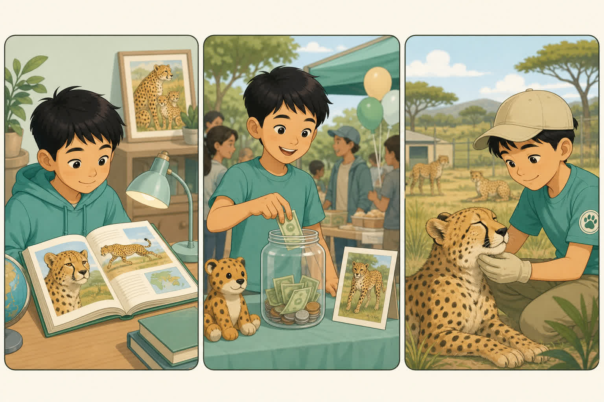
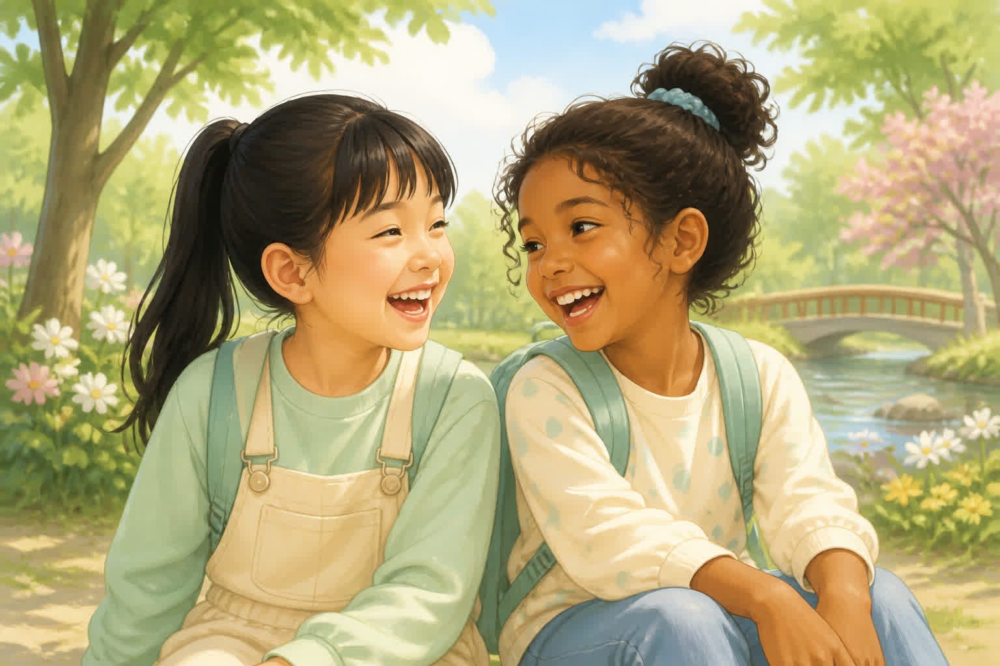
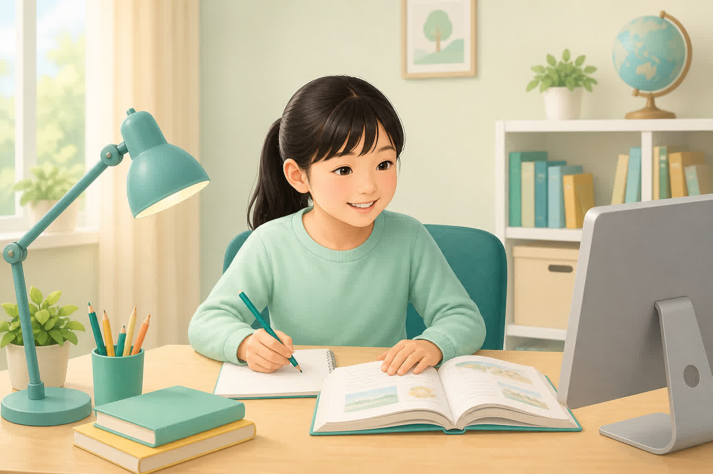

raise awarenesseven ifso fartake an interest inkeep healthy
1. 提高意识 →
答案：raise awareness
2. 即使 →
答案：even if
3. 到目前为止 →
答案：so far
4. 对……产生兴趣 →
答案：take an interest in
5. 保持健康 →
答案：keep healthy
提高 · 20分
阅读技能 · 看图排序
细节定位、词义猜测、主旨标题、NOT true；结合连图练顺序。
A. 阅读技能选择（8分 · 每题 2 分）
1. 细节题应先做什么？
B。关键词定位（scanning）。
2. “The collars track the animals. This helps protect them.” 中 track 最可能是？
C。上下文因果猜词。
3. 选最佳标题时，应避免？
A。避免以偏概全。
4. Which is NOT true if the text says “If you feel bad, see a doctor”?
D。与原文相反，是 NOT true。
B. 短文填空（8分 · 每空 2 分）
differencemoneylearningdoctor
Lily wants to help stray cats. She raises by selling bookmarks. She also keeps about animal care. If a cat doesn’t feel well, she takes it to see a . Lily believes kids can make a .
C. 看图排列句子顺序（4分）
按连图自上而下顺序，给句子编号 1 / 2 / 3。

连图：①读关于猎豹的书 → ②卖东西筹款 → ③在保护中心做志愿
(___) He raises money by selling things.
答案：2
(___) He spends summers volunteering at the sanctuary.
答案：3
(___) He reads a book and learns cheetahs are in danger.
答案：1
正确顺序：___ → ___ → ___
答案：1-2-3
挑战 · 20分
综合迁移 · 看图造句
新语境微型阅读 + 看图写句。
A. 微型阅读（8分 · 每题 2 分）
Tom wants to stay young. He makes bright and happy friends. He keeps learning one new thing every day. He also does more exercise. When he doesn’t feel well, he goes to see the doctor.
1. What kind of friends does Tom make?
B
2. How does Tom become clever according to the text?
C
3. Which is NOT true?
A
4. Best title?
D
B. 看图造句（12分 · 每题 4 分）
观察图片，写一句完整、正确的英语句子。
1.

两个朋友开心地在一起。
参考：The bright and happy friends are laughing together. / Happy friends can change your bad mood.
2.

学生在电脑前学习、做笔记。
参考：The student keeps learning at the computer. / She is learning something new.
3.
孩子和家长在诊所看医生。
参考：The child goes to see a doctor with his parent. / When you don’t feel well, see a doctor.